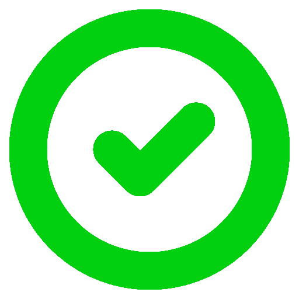

<ion-header>
  <ion-toolbar>
    <ion-title>Photo Taker</ion-title>
  </ion-toolbar>
</ion-header>

<ion-content>
<ion-content [ngClass]="{ 'isMobile': platform.is('mobile') }">
  <div class="emojiBar" [ngClass]="{ 'mobileBar': platform.is('mobile') }">
    <div *ngFor="let emoji of emojis" [ngClass]="{ 'selectedEmoji': emoji.name == selectedEmoji?.name }" (click)="selectEmoji(emoji)" class="emoji" tappable>
      {{ emoji.icon }}
      
    </div>
  </div>

  <div class="controlContainer">
    <ion-button (click)="startPictureCollectorLoop()">Start {{ selectedEmoji?.icon }}</ion-button>
    <div class="">{{ photoCounter - 1 }}/{{ numberOfPictures }} Photos</div>
    <ion-button (click)="showExplanationModal()">Explications</ion-button>
    <ion-button *ngIf="platform.is('mobile')" class="switchCamera" (click)="switchCameraFunc()"></ion-button>
  </div>

  <div class="cameraContainer">
    <div class="cameraFitContainer">
      <div *ngIf="showCountdown" class="countdown">{{ countdownNumber }}</div>
      <webcam id="webcam" [width]="videoWidth" [trigger]="cameraTriggerObservable" [switchCamera]="switchCameraObservable" (imageCapture)="handleTakenPicture($event)" (initError)="handleCameraInitError($event)"></webcam>
    </div>
  </div>


  <div class="snapshot" *ngIf="showPicture">
    
  </div>
</ion-content>
